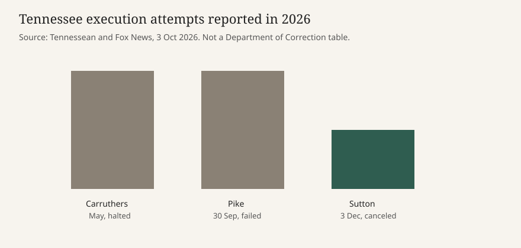

Nashville · corrections · 3 October 2026
Tennessee’s corrections commissioner will step down after the failed Pike execution

What the desks agree on
On Saturday, 3 October 2026, Governor Bill Lee said Tennessee Department of Correction Commissioner Frank Strada will leave the job later this month. The announcement came three days after the state tried and failed to execute Christa Pike at Riverbend Maximum Security Institution in Nashville. Pike is the only woman on Tennessee’s death row. Attorneys had already said she was unconscious and on a ventilator after the attempt. Saturday’s new institutional fact is the resignation, not a new medical chart.
The Tennessean, the New York Times, and Fox News all report that Strada submitted a resignation and that Lee accepted the timing. They also agree that Lee has ordered an outside review and that the remaining execution on the 2026 calendar, that of Gary Wayne Sutton on 3 December, has been called off while the review proceeds. Fox adds a name for the reviewer: former U.S. Attorney Ed Stanton, retained at Lee’s request by the Tennessee Attorney General’s Office. That name is in the Fox account of the state’s Saturday announcement. It is not, in the pieces scored here, a copy of the retention letter.
Two of three execution attempts under Strada in 2026 did not end in a completed lethal injection. In May the state halted the attempt on Tony Carruthers after the team could not set the intravenous lines. On 30 September the state gave Pike two doses of pentobarbital and she survived. Those two failures are the record the Saturday stories use. They are not a finding that every step of the written protocol was broken.
What is only a quote
Strada’s statement, distributed with the governor’s announcement, says serving as commissioner was an honor and that he continues to believe the department “carried out its responsibilities in accordance with the established protocol.” He also says resigning is “in the best interest of Tennesseans as the independent review moves forward,” and that he will help determine what occurred. Lee’s quote thanks Strada for serving “with integrity” and for putting Tennesseans first. Those sentences are the speakers’ positions. They are not a laboratory result, an autopsy, or a completed inspector-general report.
On Thursday, Lee had said that as far as he knew the department followed the protocol vetted by the attorney general’s office. Two days later he announced the resignation. The Times places those two statements next to each other. The gap is real: a governor can defend a protocol on Thursday and accept a resignation on Saturday without either sentence resolving the medical question. Pike’s lawyers, quoted by the Tennessean, say the problems in the capital system are not solved by the resignation. That is an argument from counsel, not a court order entered on Saturday.
How a resignation sits in the system
A corrections commissioner in Tennessee is a gubernatorial appointee. Leaving the post does not vacate Pike’s sentence, does not appoint a special master, and does not by itself release the execution log. The independent review Lee requested is a fact-finding assignment. Until it publishes, the public record of Wednesday night is still the combination of witness accounts, counsel filings, and the state’s claim that the protocol was followed. Friday’s dossier on this site treated the ventilator claim as a filing. Saturday does not replace that filing with a hospital discharge summary.
Lethal injection in Tennessee uses pentobarbital. The practical failure mode described by counsel is mechanical: lines that do not reach a vein, so the drug enters tissue. The Times reported burns and blisters on both arms, again from lawyers. A bent needle and a count of attempts were in Friday’s filings. None of the Saturday pieces adds a state vital-signs table. Readers can hold both the protocol defense and the injury description without treating either as the finished review.
The political clock is separate from the medical one. Lee called the failure “deeply disturbing.” Bipartisan calls for Strada to go are reported by the Times as background, not as a roll-call vote. A resignation can lower the temperature of a news cycle and still leave the protocol, the drug supply, and the training of the execution team untouched. Sutton’s date is canceled pending the review. That is a schedule change, not a repeal of the death penalty in Tennessee.
What this story is not
It is not a finding that Strada personally placed a needle. It is not a finding that the protocol was followed, which is his claim, or that it was violated, which is the question the review is for. It is not a new account of Pike’s consciousness beyond what counsel said earlier. It is not a national statistic on botched executions. The capitol photograph is a building in Nashville, not the prison and not the prisoner.

Source articles and scores
| Outlet | Headline | T | N | C |
|---|---|---|---|---|
| The Tennessean | Frank Strada resigns as TN corrections chief after 2 failed executions | 93 | -2 | 86 |
| The New York Times | Tennessee’s prison chief will step down after the failed execution of Christa Pike | 91 | -8 | 80 |
| Fox News | Tennessee prison chief resigns after failed execution as former US attorney tapped to lead independent review | 90 | +8 | 78 |
C is below 100 because each piece carries Strada’s protocol defense or Lee’s “integrity” line beside an unfinished review. The Times headline frame “embattled” and “botched” pulls N down. Fox’s “botched” is paired with the state’s sentencing frame, which pulls N up. T stays high because the resignation, the December cancellation, and the review order match across desks.